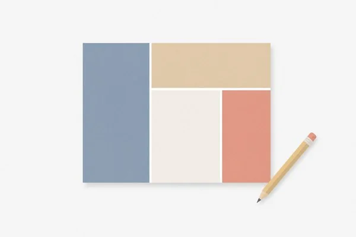
面積迷路
ひらめきと論理的思考力を鍛えるロジックパズル。複雑な計算を使わずに、長方形の面積と辺の比率から未知の長さを解き明かします。
マンホールカード
全国各地の鮮やかなデザインマンホールカードを集めて楽しむビューア＆マップ。地域の歴史や文化が詰まったご当地デザインを探訪できます。
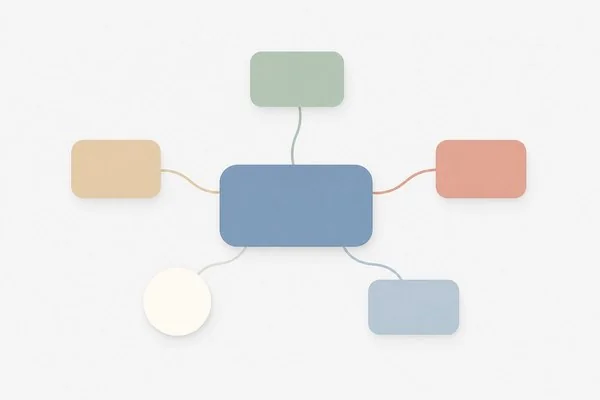
NoxMind
思考を自由に広げ、複雑なアイデアを明快に整理するマインドマップ＆グラフィカル思考キャンバス。ノードを自由につなぎ合わせて発想を爆発させます。
世界遺産マスター
世界中の素晴らしい文化遺産や壮大な自然遺産をめぐる知識クイズ＆ガイド。多彩なクイズを通して世界遺産の歴史や魅力を楽しく学べます。
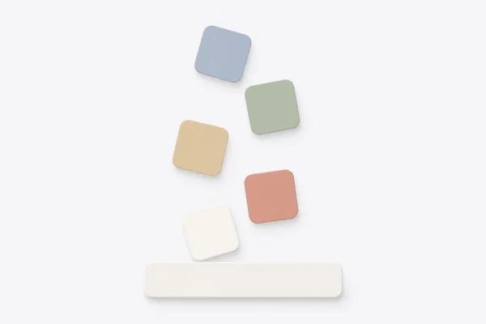
LexiDrop
落下してくる英単語をキーボードでタイピングして爽快消去。ネイティブ音声の発音と日本語訳が表示され、楽しみながら英単語を学べるタイピングゲーム。
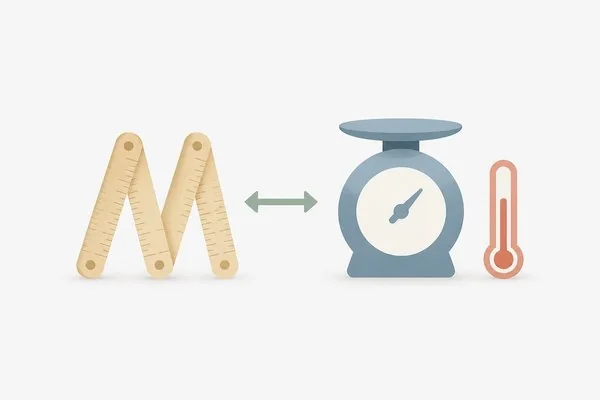
Unit Converter
アメリカと日本の単位体系（インチ↔センチ、ポンド↔キロ、華氏↔摂氏など）を相互にスムーズ変換。海外旅行や買い物、仕事で役立つ単位ツール。
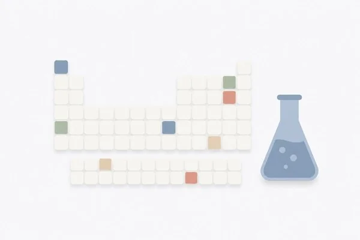
元素ラボ
全118元素の周期表とリアルタイム物理・化学反応サンドボックス。原子や化合物を自由に配置し、加熱・冷却・状態変化や多彩な化学反応を楽しく学べます。
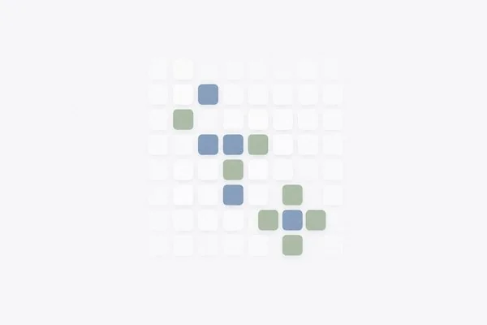
ライフゲーム
生き残りと死滅のシンプルなルールから生まれる驚異の生命シミュレーション。グライダーやパルサーなど多彩なプリセットや自由なセル描画を楽しめます。
モールスマスター
音・光・タップで直感的にマスターできるモールス信号学習アプリ。聞き取りクイズ、パドル・電鍵による送信練習、和文・欧文の相互翻訳機を搭載。
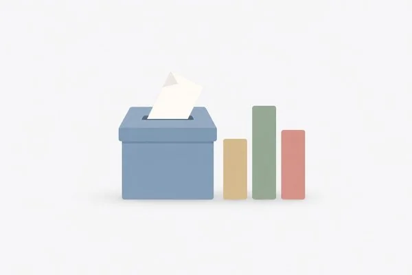
Votica
多人数での決選投票・同率1位自動再投票に対応した、手軽で安全なGoogle認証投票Webサービス。
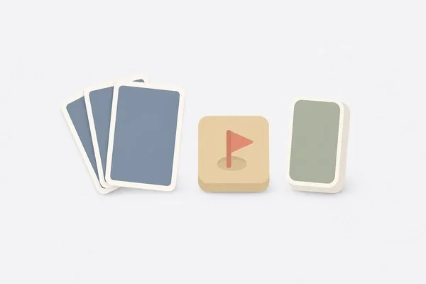
クラシック・ソロゲームズ
ソリティア（クロンダイク）、マインスイーパー、上海（麻雀ソリティア）など、一人遊びの名作クラシックゲームを快適な操作感と美しい演出で楽しめるゲームハブ。
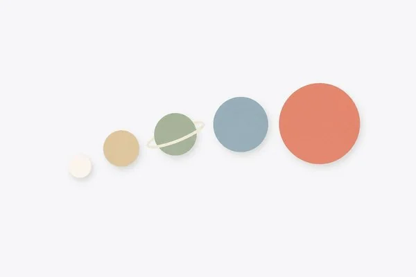
Planet Merge
同じ惑星同士をぶつけて合体・進化！月や地球から太陽を目指してスコアを伸ばす爽快な物理演算落ち物パズルゲーム。
NativeEar
TOEICリスニングスコアアップを目指すディクテーション＆シャドーイング特訓アプリ。7段階レベル別ネイティブ音声とリアルタイムDiff判定で耳と発音を鍛えます。
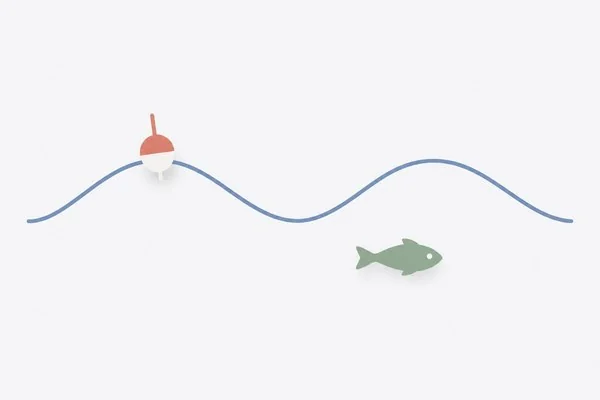
釣行ナビ
全国の釣り場の潮汐（タイドグラフ）・波高・風速・海水温などの海洋気象データと釣行指数、魚種図鑑、釣果ログを完備した釣り人向け総合ダッシュボード。
QRコード生成
URL、テキスト、Wi-Fi接続、メール、電話番号、連絡先（vCard）など多彩な形式のQRコードを瞬時に作成。ラベル付与やカラー設定、画像保存・コピーに対応。
歴代指導者アーカイブ
日本の歴代首相、米歴代大統領、徳川十五代将軍の歩みを網羅した歴史アーカイブ。詳細な人物プロフィール、実績、歴史年表、理解度クイズを搭載。
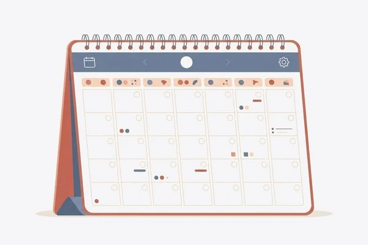
カレンダー
日本・アメリカ・イギリスの祝日に対応した年間カレンダー。西暦・和暦・干支の表示や祝日一覧、国別の年間スケジュールを1画面で直感的に確認できます。
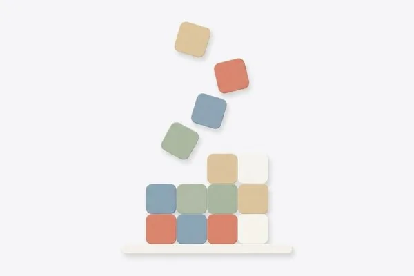
Sumris
暗算の爽快感と落ち物パズルのスリルが融合した新感覚の数字パズルゲーム。落下する数字ブロックを積み上げ、縦・横の合計を「10の倍数」にして爽快コンボ消去！
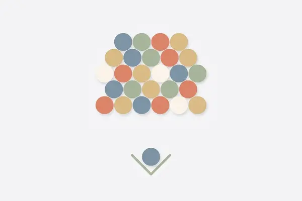
Bubblin'
狙いを定めてバブルを発射！同色バブルを3つ以上繋げて爽快に弾け飛ばすアーケード風バブルシューティングパズルゲーム。
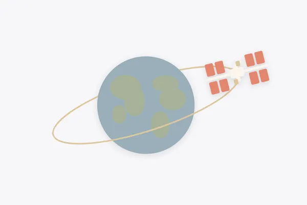
ISS Tracker
国際宇宙ステーション（ISS）の現在位置を地図上にリアルタイム表示。緯度・経度・高度・速度のテレメトリーに加え、任意の日時の軌道をシミュレーションできます。
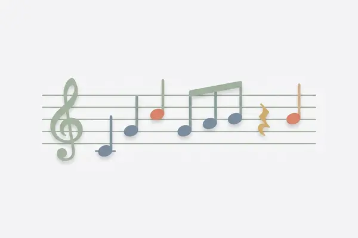
ABC譜面スタジオ
ABC記譜法の楽譜を表示・編集・リアルタイム再生・MIDIダウンロードできるWebエディタ。唱歌や国歌などの名曲ライブラリを収録。
ジローバックス
ラーメン二郎のコールとスターバックスのカスタム呪文を直感的に作成！店員に見せるモードや音声読み上げで注文も安心。
該当するプロジェクトが見つかりませんでした。